Language tutorial
Basics
a sends a signal to b
The most simple sequence chart is the one where an entity a sends a signal to an entity b
a -> b;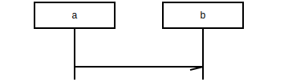
As you can see this creates two entities (a and b), both with a lifeline, and an arrow from the first to the second lifeline.
Adding labels
To add a label to your signal, put it behind a colon, like so:
a -> b: "ping";

Note: when your description doesn't contain a , or a ;
it is possible to leave the quotes out of the label, so in this case
a -> b: ping; would have achieved exactly the same effect.
b replies to a
Adding extra parts to the conversation works along the same lines
a -> b: ping; b >> a: heard ya!;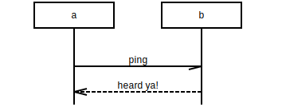
There is a plethora of arcs (arrows, lines) at your disposal. We've thrown a small cheat sheet together that sums up the basic ones (svg, png). As we've been using it quite a lot, we've put it behind the (?) button in the online demo as well.
Notes
To add a note to a chart use the special note arc type.
Notes are similar to arcs in that they start on a lifeline and end
on one.
a -> b: ping; b >> a: heard ya!; a note a: we're not done yet ...;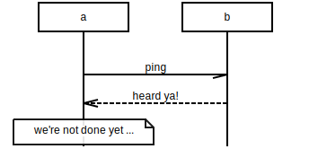
Multiline text
You can break a long label in pieces by putting the (c-style) escape code
\n on the spots you want to split the label. This works for
all labels.
a note b: This is a note consisting of\ntwo lines of text; b => c : Breaking text in two\nalso works for arcs;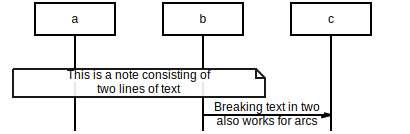
Empty rows, omitted rows, comments
Sometimes your chart needs some more space between arcs, e.g. to emphasise grouping.
a =>> b: do something for me; b >> a: done; |||; a => c : "b is done doing something;\ngo bother him"; c -> b : bother;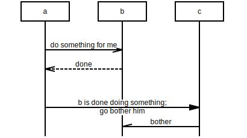
To indicate you deliberately left out stuff of your chart, you can use ellipses, like this:
a =>> b: Do the voodoo; b => c : Iberian dance task; c -x b : Whaaat?; ... : magic happens here; b >> a : Magic answer;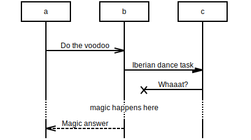
To demarcate more strongly and/ or to comment on a part, use comment (---), like so:
a =>> b: readOutLoud\n(message); --- : for each line in the message:; b => "text to\nspeach": getAudio (line); "text to\nspeach" >> b: lAudioStream; b -> speaker: play(lAudioStream);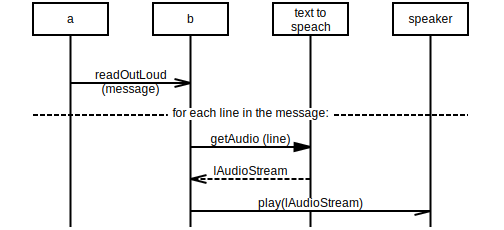
Ignore this
In your program lines starting with # or //
are ignored, as is everything between /* c-style block comments */
# This line is ignored a =>> b: what's happening here? ; /* don't know */ // ignored line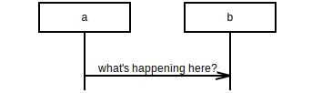
Caveat: on translating to mscgen all ignorable text gets lost.
Advanced stuff
Options: arcgradient, hscale, width, wordwraparcs
With arcgradient all lines get skewed a little.
Options go on top
arcgradient="10"; client => server : SYN; server => client : SYN + ACK; client => server : ACK;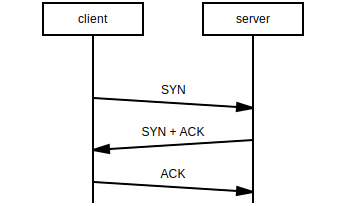
hscale horizontally scales the chart a bit. Numbers bigger than 1 enlarge it; smaller than 1 shrink it.
arcgradient="10", hscale="0.6"; client => server : SYN; server => client : SYN + ACK; client => server : ACK;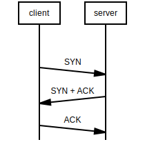
... and width scales the whole chart so it fits in exactly the amount of pixels width.
arcgradient="10", width="240"; client => server : SYN; server => client : SYN + ACK; client => server : ACK;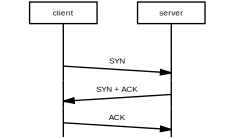
The default behaviour for regular (= not note, box, abox or rbox) arcs is that
text does not get wrapped automatically. To override this you can use the
boolean wordwraparcs option. Just like the other options, this one was
copied from mscgen. mscgen not only accepts true and
false, but also on and off and 1
and 0 all with or without quotes.
wordwraparcs=false; # default behaviour
a => b : This will get wrapped when wordwraparcs=true;
a note b : "Text in notes, boxes (box, abox, rbox)
and entities gets wrapped automatically.
The wordwraparcs option does not influence
that behavior.";
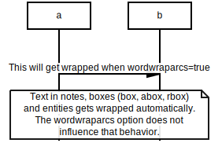
wordwraparcs=true; # override default behaviour
a => b : This will get wrapped when wordwraparcs=true;
a note b : "Text in notes, boxes (box, abox, rbox)
and entities gets wrapped automatically.
The wordwraparcs option does not influence
that behavior.";
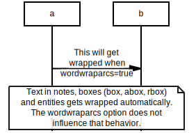
Explicit entity declarations: labeling entities, use your own order
To prevent you from having to enter long entity names in each line, you can explicitly declare entity names at the start of your script and give them labels.
A: Actor, fe:Front end, be: Back end; A =>> fe: "log me in\n(id, secret)"; fe => be: "getToken\n(id, secret)"; fe << be: [OK] token; A << fe: Whoop!;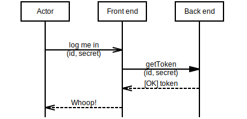
The msgenny parser puts the entities in the order they occur in your script, e.g.
1 =>> 4; 3 >> 2;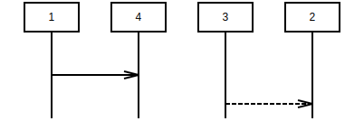
If that's not what you want, declare them in the order you want them to appear:
1,2,3,4; 1 =>> 4; 3 >> 2;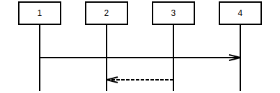
broadcasts, parallel calls
When an entity has to send a message to all entities at once (broadcast) use * as entity name.
When you use this it is practical to use the arcgradient option to prevent lines from overlapping.
arcgradient="14"; a, b, c, d; b =>> *;
In situations where you want to epress two calls being executed in parallel (or for some
other reason want to see two arcs on one row), seperat them with a , in stead
of with a ;
a, b, c, n; a => b: parallel\nwith c => b, c => b: parallel\nwith a => b, n note n: a note on\nthe same line;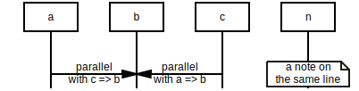
Both ways, no way
For almost every arc type (->, =>, =>>,
>>, :>) a two way variant exists, as well as a variant
without arrows:
a <-> b, b <=> c; a <<=>> b, b <<>> c; a -- b, b .. c; a :: b, b <:> c ;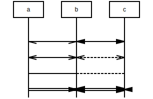
box, rbox, abox
State and condition boxes are part of the origin mscgen standard, and hence they're supported in ms genny as well.
a box b : box; b abox c : abox; c rbox d : rbox;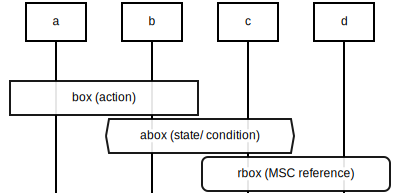